Why you'll love it
Stop alt-tabbing to check what's next. Your schedule is always one glance away, and never in your way.
Truly click-through
Clicks, drags, even right-clicks land on whatever is behind it: desktop icons, files, the wallpaper menu. Your mouse never notices it's there.
Live, not a snapshot
It is Google Calendar. Add an event on your phone and watch it appear on your desktop seconds later.
Edit in place
One click makes it a normal window: add events, drag meetings around, then fade it back into the wallpaper.
Live-wallpaper mode New
Tuck the calendar behind your desktop icons. Your icons sit on top of your schedule and stay clickable.
Edge shadows New
Soft dark fades on the calendar's left and right edges keep desktop icons readable, even over a busy week.
Matches your calendar New
Light or dark: the title bar and window frame follow Google Calendar's own theme, automatically.
As subtle as you want
Transparency from 0 to 95 %, from solid window to a ghost that melts into your wallpaper. Every change previews live.
Stays in the background
Pinned beneath every window. It never pops over your work, never steals focus, never interrupts.
Feels native
Snap it, maximize it, move it across monitors. Sharp at every display scale. Starts with Windows, lives in the tray.
Two modes, one button
In widget mode the title bar shrinks to just its two buttons and everything else lets your clicks through. The mouse button brings back a full, editable calendar in one click.

Invisible to your mouse, even right-click
Right-click your wallpaper and Windows answers, not the calendar. The desktop context menu opens straight through it.

Make Google Calendar your live wallpaper
Turn on Sit behind desktop icons and, in widget mode, your calendar slides under the desktop icons, just like a wallpaper. The icons stay on top, readable and clickable.

Your schedule becomes part of the desktop itself. Files and shortcuts sit on top of it.
Dark fades on the left and right edges keep icon labels legible. Set each side with one two-handle slider.
The title-bar buttons stay above the icons, so a fully editable calendar is always one click away.
Light or dark, it matches your calendar
Switch Google Calendar to dark mode in its own settings and the widget's title bar, window frame and hover panel follow within a second. Nothing to set up in the widget.

A tiny control panel runs everything
Transparency, live-wallpaper mode, edge shadows, the hover-panel corner, start with Windows, sign-in and sign-out. Changes preview live as you drag.

Feel it, right here
Flip the mode, drag the sliders, tuck it behind the icons, switch the calendar's theme, and try right-clicking the wallpaper or clicking Notes through the calendar.
Settings
Set inside Google Calendar; the widget's title bar follows it.
Up and running in a minute
No new account, no configuration.
Grab the ~2 MB installer. It fetches anything else it needs automatically.
Log into your Google account. Your session stays on your computer.
Click the mouse button in the title bar. Your calendar fades into the desktop.
What's new
Updates are free. Installing a new version keeps your settings and Google sign-in.
-
1.3
- The title bar, window frame and hover panel follow Google Calendar's light or dark theme.
- Transparency and edge shadows preview live while you adjust them.
- Settings, title bar and hover panel stay sharp and correctly sized at every display scale, including mixed-scale monitors.
-
1.2
- Edge shadows: dark fades on the calendar's edges keep desktop icons readable.
- In widget mode the title bar lets clicks through; only its buttons stay clickable.
-
1.1
- Live-wallpaper mode: the widget can sit behind your desktop icons.
- Transparency in percent and an optional corner hover panel.
- Recovers on its own after monitor and display changes.
Questions, answered
How do I put Google Calendar on my Windows desktop?
Download and run the free installer, sign in to your Google account once, then click the mouse button in the widget's title bar. Your real Google Calendar stays on the desktop as a transparent, click-through widget, pinned beneath your other windows.
Can Google Calendar be my desktop wallpaper?
Yes. In Settings, turn on "Sit behind desktop icons (live wallpaper)". In widget mode the calendar then sits under your desktop icons like a live wallpaper, and edge shadows keep the icons readable on top of it.
Is it really free?
Yes. It's free and open source under the GNU AGPL-3.0, with no ads, no account to create and no telemetry. If you'd like to support development, there's an optional PayPal donation link.
Is this an official Google app?
No. It's an independent open-source project that shows the real calendar.google.com in its own window. It is not affiliated with or endorsed by Google.
Does it have a dark mode?
Yes. Turn on dark mode in Google Calendar's own settings (the gear icon) and the widget's title bar, frame and hover panel switch to match within a second.
Will it get in the way of my work or games?
No. In widget mode it stays beneath every other window, never takes focus and lets every click through, so anything you open simply covers it.
Windows says the installer is unrecognized. Is it safe?
The installer isn't code-signed, because certificates cost money and this app is free. Click "More info", then "Run anyway". The full source code is on GitHub, so you can review it or build it yourself.
Where is my Google sign-in stored?
Only on your computer, in the app's private browser profile, the same way Chrome stores a session. In Settings you can sign out and keep the account for a quicker sign-in later, or delete all of the widget's browser data. The uninstaller also offers to remove everything.
Does it work with multiple monitors and high-DPI screens?
Yes. Move it to any monitor, snap or maximize it there, and it remembers its place. It stays sharp at every Windows display scale (125 %, 150 %, 200 % and more), including setups that mix monitors with different scales.
What do I need to run it?
Windows 10 or 11 and a Google account. The installer downloads the .NET 8 Desktop Runtime and Microsoft Edge WebView2 only if they're missing (WebView2 is built into Windows 11).
How do I uninstall it?
Like any other app, from Windows Settings → Apps. The uninstaller asks whether to also remove your saved settings and Google sign-in data.
♥ Support the project
Google Calendar Desktop Widget is free and always will be. If it earns a permanent spot on your desktop, you can fuel its development.
☕ Donate via PayPal